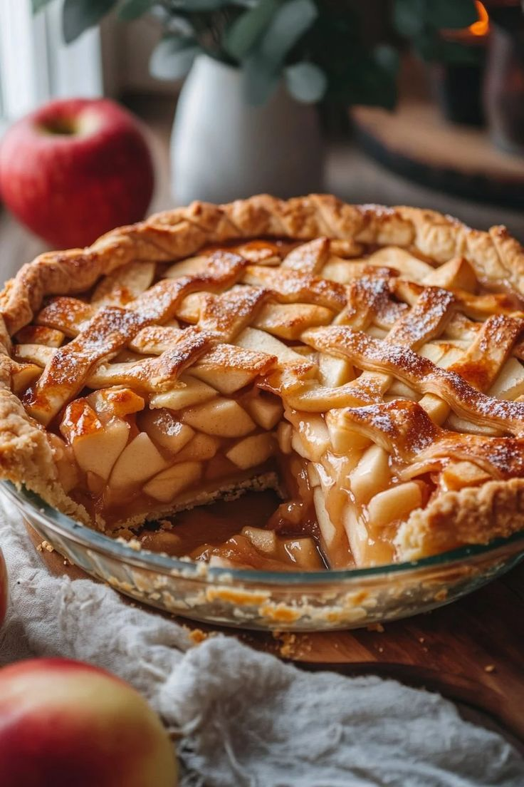

Pie

Description
A pie is a baked dish with a pastry crust holding a sweet or savory
filling, like fruit, meat, custard, or vegetables, often topped with more
pastry or left open. It's defined by its crust—either a bottom crust, a
top crust, or both enclosing the filling—and comes in variations like
fruit pies, meat pies (steak & kidney), quiches, tarts, and creamy
desserts, serving as a versatile comfort food in many cultures.
Ingredients
- Pie crust
- Apples
- Sugar
- Cinnamon
- Butter
- Lemon juice (optional)
Steps
- Preheat the oven to 180°C (350°F).
- Peel and slice the apples.
- Put the apple slices in a bowl.
- Add sugar, cinnamon, and lemon juice.
- Mix everything well.
- Place the apple mixture into the pie crust.
- Add small pieces of butter on top.
- Cover with the top crust if using one.
- Bake for 40–45 minutes until golden brown.
- Let it cool before serving.
Home